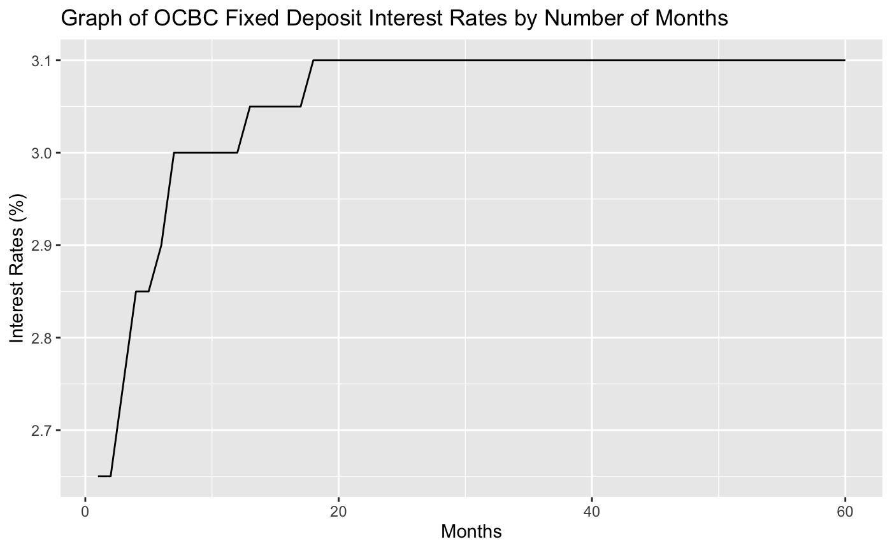

ocbc_rates.RdThis function makes the information from the OCBC Rates category APIs easily accessible in an R-readable format. There are three different types of rates, each with their own unique API
1. Fixed Deposit Rates
2. Forex Rates
3. Unit Trust Rates
ocbc_rates( rate_type = c("fixed deposit", "forex", "unit trust"), acctoken, local_currency = NULL, foreign_currency = NULL )
| rate_type | Rate type, hence the API that the function will call from. Required. Options are "fixed deposit" for Fixed Deposit Rates, "forex" for Forex Rates, "unit trust" for Unit Trust Rates. Note: it is recommended to only specify 1 rate type at a time. |
|---|---|
| acctoken | Account token. Required. Users can sign up for their api key, api secret and account token at https://api.ocbc.com/store/home |
| local_currency | The currency in which the rates will be shown. Optional. Options are "SG" for Singapore and "MY" for Malaysia |
| foreign_currency | The currency for foreign exchange. Input the official ISO 4217 currency code (e.g GBP for British Pounds). Optional. Note: Only required for Forex Rates. If specified for Fixed Deposit and Unit Trust Rates, the foreign_currency parameter is automatically ignored. |
Returns various items depending on the type of rate specified
1. For Fixed Deposits the function returns a list containing a dataframe of the fixed deposit interest rates according to the duration in months as well as a graph of this information.
2. For Foreign Exchange the function returns a dataframe containing the bank buying rate and bank selling rate, information on the local currency and foreign currency as well as the rate list unit.
3. For Unit Trust the function returns an empty dataframe as this information is not yet available through the API.
#>#> [[1]] #> duration interest_rate currency #> 1 1 Month 2.65 MYR #> 2 2 Months 2.65 MYR #> 3 3 Months 2.75 MYR #> 4 4 Months 2.85 MYR #> 5 5 Months 2.85 MYR #> 6 6 Months 2.90 MYR #> 7 7 Months 3.00 MYR #> 8 8 Months 3.00 MYR #> 9 9 Months 3.00 MYR #> 10 10 Months 3.00 MYR #> 11 11 Months 3.00 MYR #> 12 12 Months 3.00 MYR #> 13 13 Months 3.05 MYR #> 14 14 Months 3.05 MYR #> 15 15 Months 3.05 MYR #> 16 16 Months 3.05 MYR #> 17 17 Months 3.05 MYR #> 18 18 Months 3.10 MYR #> 19 19 Months 3.10 MYR #> 20 20 Months 3.10 MYR #> 21 21 Months 3.10 MYR #> 22 22 Months 3.10 MYR #> 23 23 Months 3.10 MYR #> 24 24 Months 3.10 MYR #> 25 25 Months 3.10 MYR #> 26 26 Months 3.10 MYR #> 27 27 Months 3.10 MYR #> 28 28 Months 3.10 MYR #> 29 29 Months 3.10 MYR #> 30 30 Months 3.10 MYR #> 31 31 Months 3.10 MYR #> 32 32 Months 3.10 MYR #> 33 33 Months 3.10 MYR #> 34 34 Months 3.10 MYR #> 35 35 Months 3.10 MYR #> 36 36 Months 3.10 MYR #> 37 37 Months 3.10 MYR #> 38 38 Months 3.10 MYR #> 39 39 Months 3.10 MYR #> 40 40 Months 3.10 MYR #> 41 41 Months 3.10 MYR #> 42 42 Months 3.10 MYR #> 43 43 Months 3.10 MYR #> 44 44 Months 3.10 MYR #> 45 45 Months 3.10 MYR #> 46 46 Months 3.10 MYR #> 47 47 Months 3.10 MYR #> 48 48 Months 3.10 MYR #> 49 49 Months 3.10 MYR #> 50 50 Months 3.10 MYR #> 51 51 Months 3.10 MYR #> 52 52 Months 3.10 MYR #> 53 53 Months 3.10 MYR #> 54 54 Months 3.10 MYR #> 55 55 Months 3.10 MYR #> 56 56 Months 3.10 MYR #> 57 57 Months 3.10 MYR #> 58 58 Months 3.10 MYR #> 59 59 Months 3.10 MYR #> 60 60 Months 3.10 MYR #> disclaimer #> 1 The data returned are indicative and are subjected to changes without prior notice. Please use the data at your own discretion and risk. #> 2 The data returned are indicative and are subjected to changes without prior notice. Please use the data at your own discretion and risk. #> 3 The data returned are indicative and are subjected to changes without prior notice. Please use the data at your own discretion and risk. #> 4 The data returned are indicative and are subjected to changes without prior notice. Please use the data at your own discretion and risk. #> 5 The data returned are indicative and are subjected to changes without prior notice. Please use the data at your own discretion and risk. #> 6 The data returned are indicative and are subjected to changes without prior notice. Please use the data at your own discretion and risk. #> 7 The data returned are indicative and are subjected to changes without prior notice. Please use the data at your own discretion and risk. #> 8 The data returned are indicative and are subjected to changes without prior notice. Please use the data at your own discretion and risk. #> 9 The data returned are indicative and are subjected to changes without prior notice. Please use the data at your own discretion and risk. #> 10 The data returned are indicative and are subjected to changes without prior notice. Please use the data at your own discretion and risk. #> 11 The data returned are indicative and are subjected to changes without prior notice. Please use the data at your own discretion and risk. #> 12 The data returned are indicative and are subjected to changes without prior notice. Please use the data at your own discretion and risk. #> 13 The data returned are indicative and are subjected to changes without prior notice. Please use the data at your own discretion and risk. #> 14 The data returned are indicative and are subjected to changes without prior notice. Please use the data at your own discretion and risk. #> 15 The data returned are indicative and are subjected to changes without prior notice. Please use the data at your own discretion and risk. #> 16 The data returned are indicative and are subjected to changes without prior notice. Please use the data at your own discretion and risk. #> 17 The data returned are indicative and are subjected to changes without prior notice. Please use the data at your own discretion and risk. #> 18 The data returned are indicative and are subjected to changes without prior notice. Please use the data at your own discretion and risk. #> 19 The data returned are indicative and are subjected to changes without prior notice. Please use the data at your own discretion and risk. #> 20 The data returned are indicative and are subjected to changes without prior notice. Please use the data at your own discretion and risk. #> 21 The data returned are indicative and are subjected to changes without prior notice. Please use the data at your own discretion and risk. #> 22 The data returned are indicative and are subjected to changes without prior notice. Please use the data at your own discretion and risk. #> 23 The data returned are indicative and are subjected to changes without prior notice. Please use the data at your own discretion and risk. #> 24 The data returned are indicative and are subjected to changes without prior notice. Please use the data at your own discretion and risk. #> 25 The data returned are indicative and are subjected to changes without prior notice. Please use the data at your own discretion and risk. #> 26 The data returned are indicative and are subjected to changes without prior notice. Please use the data at your own discretion and risk. #> 27 The data returned are indicative and are subjected to changes without prior notice. Please use the data at your own discretion and risk. #> 28 The data returned are indicative and are subjected to changes without prior notice. Please use the data at your own discretion and risk. #> 29 The data returned are indicative and are subjected to changes without prior notice. Please use the data at your own discretion and risk. #> 30 The data returned are indicative and are subjected to changes without prior notice. Please use the data at your own discretion and risk. #> 31 The data returned are indicative and are subjected to changes without prior notice. Please use the data at your own discretion and risk. #> 32 The data returned are indicative and are subjected to changes without prior notice. Please use the data at your own discretion and risk. #> 33 The data returned are indicative and are subjected to changes without prior notice. Please use the data at your own discretion and risk. #> 34 The data returned are indicative and are subjected to changes without prior notice. Please use the data at your own discretion and risk. #> 35 The data returned are indicative and are subjected to changes without prior notice. Please use the data at your own discretion and risk. #> 36 The data returned are indicative and are subjected to changes without prior notice. Please use the data at your own discretion and risk. #> 37 The data returned are indicative and are subjected to changes without prior notice. Please use the data at your own discretion and risk. #> 38 The data returned are indicative and are subjected to changes without prior notice. Please use the data at your own discretion and risk. #> 39 The data returned are indicative and are subjected to changes without prior notice. Please use the data at your own discretion and risk. #> 40 The data returned are indicative and are subjected to changes without prior notice. Please use the data at your own discretion and risk. #> 41 The data returned are indicative and are subjected to changes without prior notice. Please use the data at your own discretion and risk. #> 42 The data returned are indicative and are subjected to changes without prior notice. Please use the data at your own discretion and risk. #> 43 The data returned are indicative and are subjected to changes without prior notice. Please use the data at your own discretion and risk. #> 44 The data returned are indicative and are subjected to changes without prior notice. Please use the data at your own discretion and risk. #> 45 The data returned are indicative and are subjected to changes without prior notice. Please use the data at your own discretion and risk. #> 46 The data returned are indicative and are subjected to changes without prior notice. Please use the data at your own discretion and risk. #> 47 The data returned are indicative and are subjected to changes without prior notice. Please use the data at your own discretion and risk. #> 48 The data returned are indicative and are subjected to changes without prior notice. Please use the data at your own discretion and risk. #> 49 The data returned are indicative and are subjected to changes without prior notice. Please use the data at your own discretion and risk. #> 50 The data returned are indicative and are subjected to changes without prior notice. Please use the data at your own discretion and risk. #> 51 The data returned are indicative and are subjected to changes without prior notice. Please use the data at your own discretion and risk. #> 52 The data returned are indicative and are subjected to changes without prior notice. Please use the data at your own discretion and risk. #> 53 The data returned are indicative and are subjected to changes without prior notice. Please use the data at your own discretion and risk. #> 54 The data returned are indicative and are subjected to changes without prior notice. Please use the data at your own discretion and risk. #> 55 The data returned are indicative and are subjected to changes without prior notice. Please use the data at your own discretion and risk. #> 56 The data returned are indicative and are subjected to changes without prior notice. Please use the data at your own discretion and risk. #> 57 The data returned are indicative and are subjected to changes without prior notice. Please use the data at your own discretion and risk. #> 58 The data returned are indicative and are subjected to changes without prior notice. Please use the data at your own discretion and risk. #> 59 The data returned are indicative and are subjected to changes without prior notice. Please use the data at your own discretion and risk. #> 60 The data returned are indicative and are subjected to changes without prior notice. Please use the data at your own discretion and risk. #> #> [[2]]#>